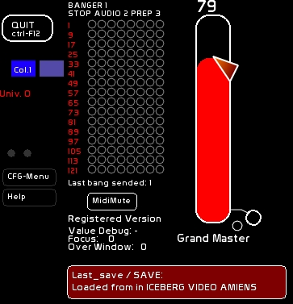
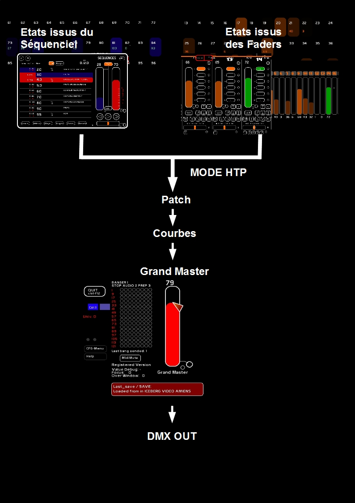

Le Grand Master est un master général qui affecte l'envoi du data à la carte dmx.
Il est situé en haut à droite, et pour les notebook à l'affichage limité à 1024×600 il apparait après le fader 48 dans l'espace faders.

Le Grand Master est pilotable en midi, ce qui vous permet de travailler avec des boites à boutons économiques:
Pour plus de précision sur le midi, voir : Configuration Midi et Affectations Midi
En clickant la pastille vous émettez vers le sports midi out le signal midi affecté à ce grand master.
Monter ou descendre le grand master ne changera pas les niveaux affichés, mais juste le signal dmx total issu des deux buffers dmx:
Un buffer est une mémoire tampon où sont stockés les états des 512 circuits.
Ces deux buffers sont mergés en htp ( Highest Takes Preeminence ): le niveau le plus haut est pris. Puis le résultat final est soumis à l'action du Grand Master.
